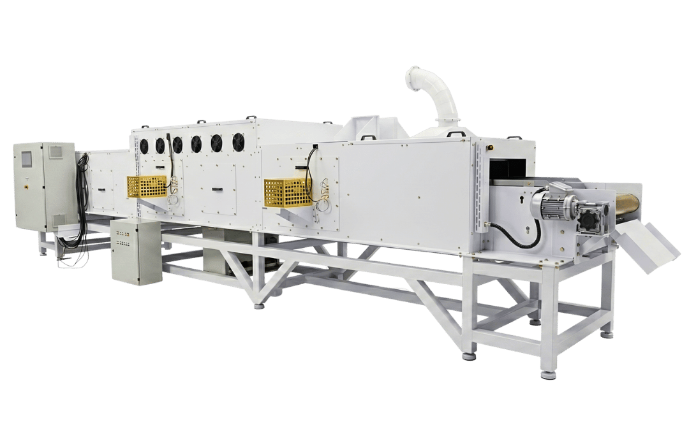

Redução de até 70% no tempo de secagem:
Acelere a secagem e transforme seu processo em uma linha contínua, com mais capacidade, produtividade e escala.

Acelere a secagem e transforme seu processo em uma linha contínua, com mais capacidade, produtividade e escala.
Mais produtividade e automação na linha, com menos gargalos e mais desempenho por hora.
Tenha maior controle da umidade final, mais uniformidade no processo e mais consistência no resultado.
Reduza desperdícios, otimize o consumo de energia e avance para uma operação mais eficiente e alinhada às metas de descarbonização.
Os resultados podem variar conforme produto, processo, umidade inicial, umidade final e parâmetros de operação.
Gargalo de processo
Em muitos processos industriais, a secagem é a etapa que mais consome tempo, energia e controle operacional. Quando essa etapa não acompanha o ritmo da produção, surgem gargalos, custos maiores e perda de margem de lucro.
Ciclos longos reduzem a capacidade produtiva e aumentam o tempo de entrega.
Consumo elevado de energia e baixa eficiência aumentam o custo por kg produzido.
A falta de controle gera lotes inconsistentes e dificulta a padronização.
Produtos fora do padrão exigem reprocesso, descarte e dificultam a escala da produção com qualidade.
Tecnologia JODI
Desenvolvida para tornar processos críticos de secagem mais rápidos, uniformes e controlados.
A tecnologia da JODI utiliza micro-ondas industriais para atuar diretamente na umidade interna do produto, acelerando o processo de secagem de dentro para fora. Conforme a aplicação, pode ser combinada ao ar quente controlado para aumentar a eficiência, a padronização e o controle sobre o resultado final.
Entenda como funciona a tecnologiaEntrega prática
Processos mais rápidos para aumentar capacidade produtiva e reduzir gargalos.
Mais controle e repetibilidade no resultado final do produto.
Melhor aproveitamento da energia no processo de remoção de umidade.
Controle de temperatura, textura, cor e características sensíveis do produto.
Redução de variações que geram perdas, reprocessos e instabilidade.
Soluções projetadas para operação industrial e alto volume.
Sobre a JODI
A JODI Tecnologias desenvolve, fabrica e integra sistemas industriais de secagem por micro-ondas e soluções híbridas com ar quente para empresas que buscam mais eficiência, controle e produtividade em seus processos.
Com sede em Panambi/RS e filial em Campinas/SP, a JODI atua desde a análise técnica do produto até a engenharia, automação, fabricação, instalação e validação da solução.
Aplicações industriais
A JODI desenvolve projetos para aplicações em alimentos, pet food, minerais, biomassa e materiais especiais.
Secagem de snacks, ossos, carnes, ingredientes e produtos de alto valor agregado.
Ver aplicaçãoSoluções para produtos que exigem controle de umidade, textura e qualidade.
Ver aplicaçãoAplicações para matérias-primas agrícolas, farelos, ervas, sementes e biomassa.
Ver aplicaçãoProjetos sob medida para produtos técnicos, sensíveis ou de alta complexidade.
Ver aplicaçãoDiversos produtos podem ser avaliados pela tecnologia JODI. Cada produto tem uma curva de secagem própria e pode ser analisado tecnicamente pela equipe da JODI.
Provas e validação
Cada produto possui uma curva de secagem própria. Por isso, a JODI valida tecnicamente a aplicação antes de propor uma solução industrial.
Diagnóstico técnico
Em 3 passos, avaliamos se a tecnologia de micro-ondas faz sentido para o seu produto, capacidade e objetivo de processo.
Entendemos seu produto, processo atual, capacidade desejada e principais desafios da operação.
Avaliamos a viabilidade da tecnologia e indicamos uma direção inicial de capacidade, configuração e necessidade de testes.
Quando fizer sentido para os dois lados, apresentamos uma proposta técnico-comercial com escopo, desempenho esperado e cronograma.